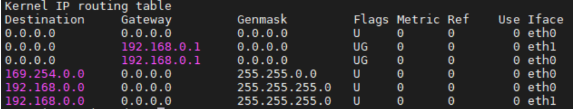
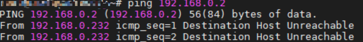
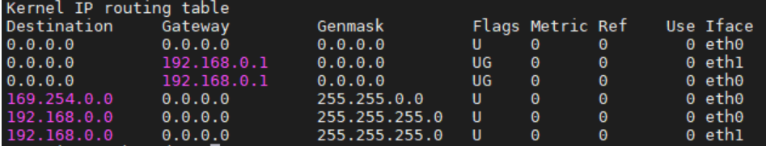
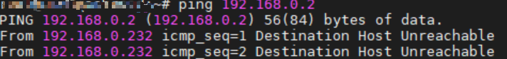

主机同网段双ip问题
现象
因为两个网卡都在同一个网段，所以如果这个时候直接和我们的主机（IP192.168.0.2）进行ping，因为优先级的原因，会导致有一个网卡会无法ping通主机。
  
 
反向路由检查
您可以把这个机制想象成一个严格的“门卫”。当服务器从一个网络接口（比如eth1）收到一个数据包时，这个“门卫”会去查路由表，问：“要回复这个数据包，我们应该从哪个接口发出去？”
- 正常情况：如果查到的最佳出口恰好是数据包进来的接口（
eth1），则验证通过，数据包被正常接收处理。 - 您遇到的情况：服务器上两个IP在同一LAN，网关可能只在一个接口上（或系统认为只有一个最佳路径）。当数据包从
eth1进入，但路由表显示回复它的最佳路径是eth0，这时“门卫”就会拒绝这个数据包，导致ping不通 。关键在于，系统检查的是“反向路径”是否最优，而非是否可达 。 ## 问题诊断与解决步骤
1. 确认 rp_filter 的当前设置
首先，您需要查看系统当前的反向路由检查设置。在终端中执行以下命令： 1
2
3cat /proc/sys/net/ipv4/conf/all/rp_filter
cat /proc/sys/net/ipv4/conf/eth0/rp_filter # 请将 eth0 替换为您的实际网卡名
cat /proc/sys/net/ipv4/conf/eth1/rp_filter # 请将 eth1 替换为您的实际网卡名
如果这些值被设置为 1（严格模式），那么它很可能就是导致您一个IP不通的原因。 ### 2. 关闭反向路由检查
重要提示：关闭此功能会降低系统对IP地址欺骗（IP Spoofing）的防御能力 。请确保您的服务器处于受信任的内网环境中。
方法一：临时关闭（重启后失效）
适用于快速验证问题。执行命令： 1
2
3echo 0 > /proc/sys/net/ipv4/conf/all/rp_filter
echo 0 > /proc/sys/net/ipv4/conf/eth0/rp_filter
echo 0 > /proc/sys/net/ipv4/conf/eth1/rp_filter
通过修改系统配置文件，使设置永久生效。
- 编辑
/etc/sysctl.conf文件：1
vi /etc/sysctl.conf
- 在文件末尾添加或修改以下行：
1
2
3
4
5net.ipv4.conf.all.rp_filter = 0
net.ipv4.conf.default.rp_filter = 0
如果需要，也可以为每个网卡单独设置
net.ipv4.conf.eth0.rp_filter = 0
net.ipv4.conf.eth1.rp_filter = 0 - 使用以下命令使配置立即生效：
1
sysctl -p
3. 折中方案：采用松散模式
如果担心完全关闭的安全风险，折中的办法是启用松散模式（Loose Mode），将值设置为 2。这样既允许了非对称路径的存在（您的包从A进，从B出），又保留了基本的源地址验证 。修改方法同上，只需将配置文件中的值改为2： 1
2net.ipv4.conf.all.rp_filter = 2
net.ipv4.conf.default.rp_filter = 2
其他可能性
虽然反向路由检查是最常见的原因，但如果调整后问题依旧，还可以关注以下几点：
- 防火墙规则：检查 iptables 或 firewalld 是否有规则阻止了特定IP的ICMP请求。
- 路由表本身：使用
ip route show或route -n确认两个IP地址的路由表项是否正确。 - ARP问题：在局域网中，使用
arp -a或ip neighbour检查ARP表项是否正确 。